ESSAY ON AFRICAN TRADITION MEDICINE OF
THE MAASAI PEOPLE
The Traditional Medicine by Masaai People
In the Maasai community, traditional use of plants for curative purposes is a cultural practice
that has been inherited from their ancestors over many generations . For example, young
Maasai warriors, the Morans, carry out traditional ceremonies that involve the slaughter of
bulls deep in the forest where they gather medicinal plants to prepare a traditional soup for
general body health.
The Maasai community is known to possess a rich traditional knowledge on the use of plants
for medication dating back probably for centuries, but first documented only in the
beginning of the last century. They spend most of their time herding in the savannas and
forests searching for fresh pastures and water for their livestock.
As a result, they have a good understanding—acquired over time—of their local
surroundings and natural resources.
Of most importance are the plant species in their local environment which provide medicine,
construction materials, firewood, and fodder for their cattle.

The available research on medicinal plants of the Maasai of Kenya is highly fragmented, encompassing single
villages in different geographical areas of the Maasai land.
There are about 289 medicinal plant species used by the Kenya Maasai .
Leguminosae was the family with most species used as medicine by the Maasai, followed by Asteraceae,
Malvaceae, Lamiaceae, and Euphorbiaceae.
22 families (31%) were represented by only one species with medicinal uses in our data
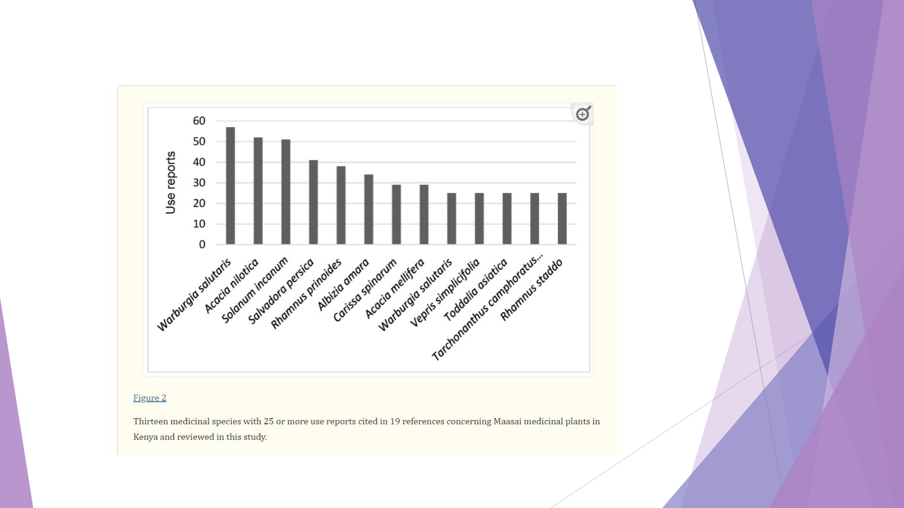
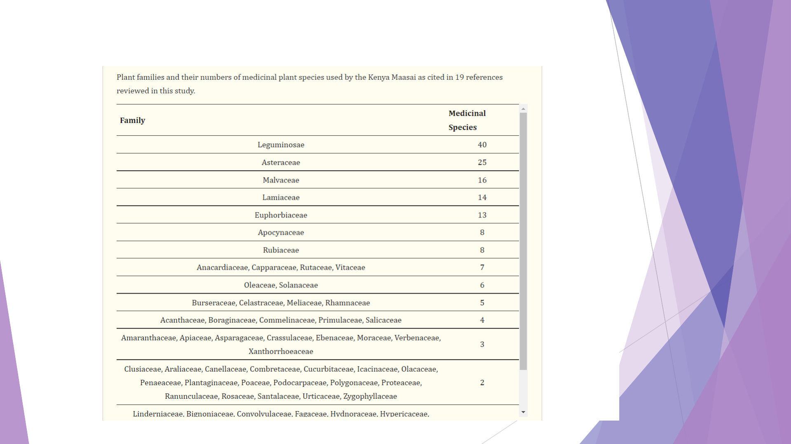

The 1844 use reports were classified into 26 health disorder categories following the International Classification
of Primary Care classification system (ICPC). Most use records were in the categories Gastrointestinal disorders
(504 use reports; 27%) and Respiratory system disorders (252 use reports; 14%) .
Nine disorders had more than five use reports per species (
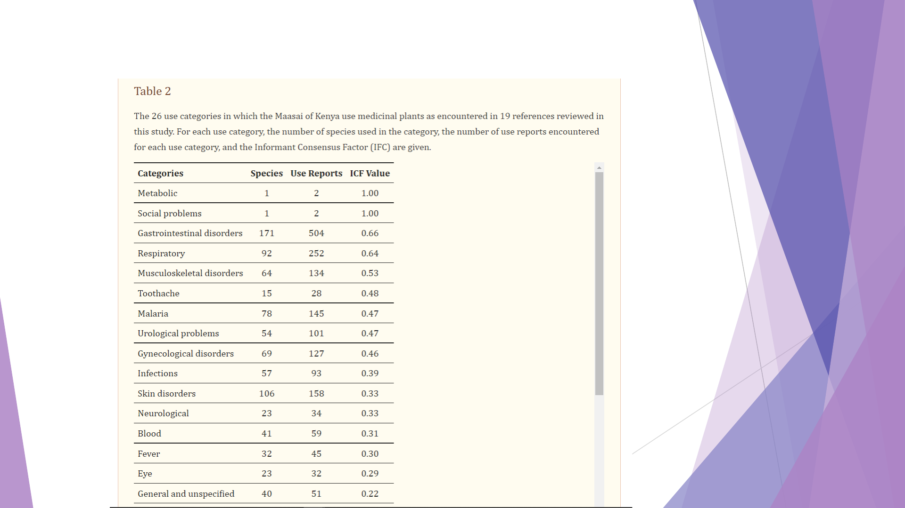
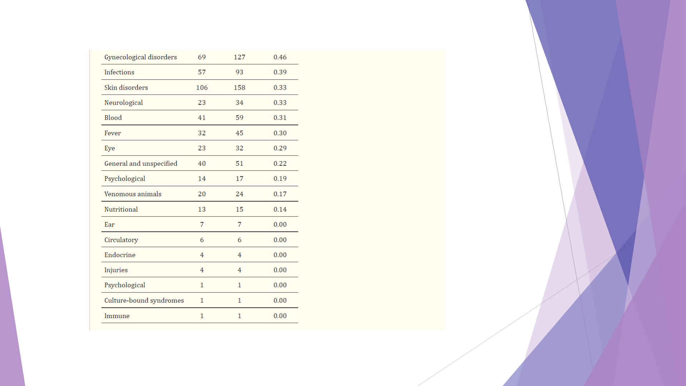

About two thirds of the primary sources analyzed mentioned which part of the plants that was used, but only 342 (19%) of the
use reports mentioned how the plants were prepared before being used and their route of administration.
Roots were the most frequently used plant part, followed by “multiple parts” .
Decoction was the most common preparation method with 230 use reports, followed by pounding (76) and burning (29).
The Maasai make a soup prepared by boiling pieces of meat in water with medicinal plants added for body health and strength.
Occasionally, milk, honey, or tea is added to reduce the bitter taste.
The least used methods were eating without any preparation (4) and soaking (3).
Oral administration was the most common route of applying medicine with 25% of use reports followed by smearing, inhaling,
and poultice.
For the Maasai, the boiled content is ingested orally and the taste adjusted by adding milk or tea to the medicine.
Medicinal plants were also applied directly to wounds or on the skin by smearing or rubbing the squeezed medicinal plant extract
directly to the affected areas.
Body steaming and bathing, dropping the medicine in the nose, eye, or ear were also used. However, 68% of the total use reports
did not indicate the route of administration.
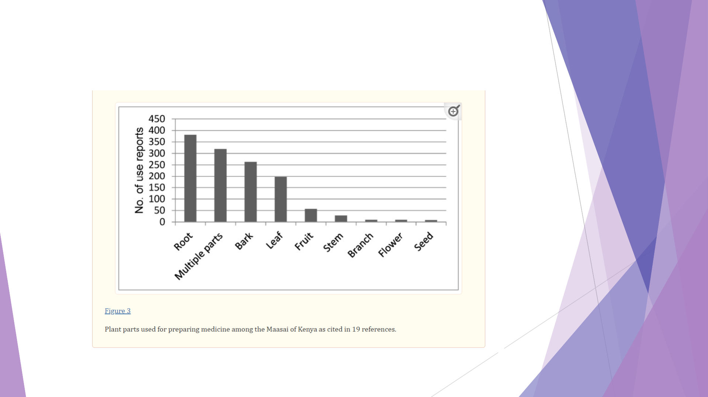
The use of plant-based medicine among the Maasai is still an important component of their culture.
This is demonstrated by the high number of use reports in the primary references (Figure 4).
It is a solid indication of the diversity of medicinal plants used by this community.
The high reliance of medicinal plants may be due to strong cultural beliefs, high cost of other kinds of health
care in Kenya, inaccessibility of governmental health facilities, and the quick and free accessibility of medicinal
plants.
The same reasons have been reported among the Samburu of Kenya and in rural communities in southern
Ecuador .
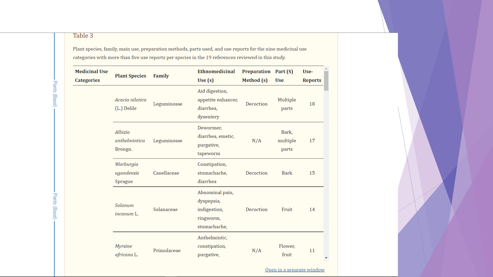

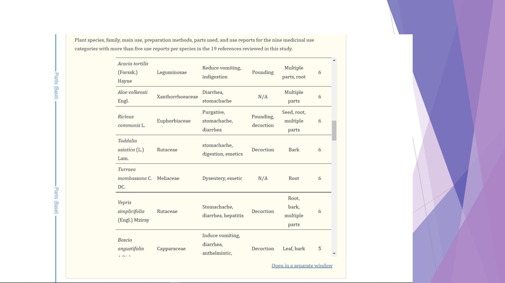
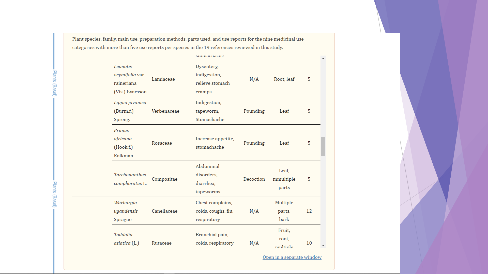
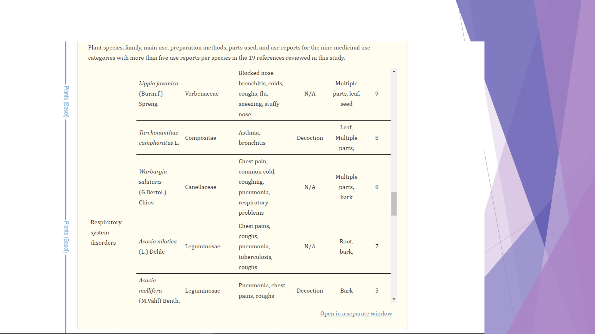
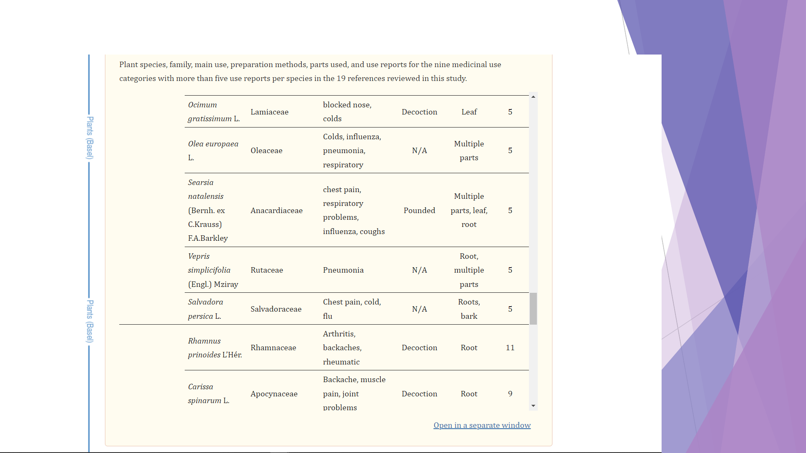
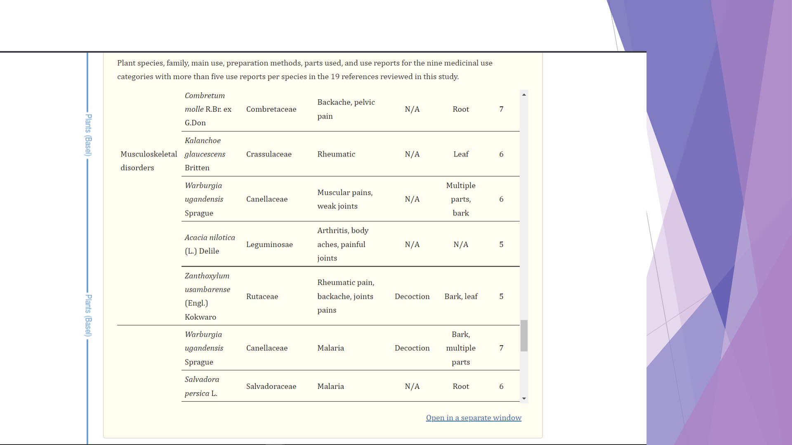
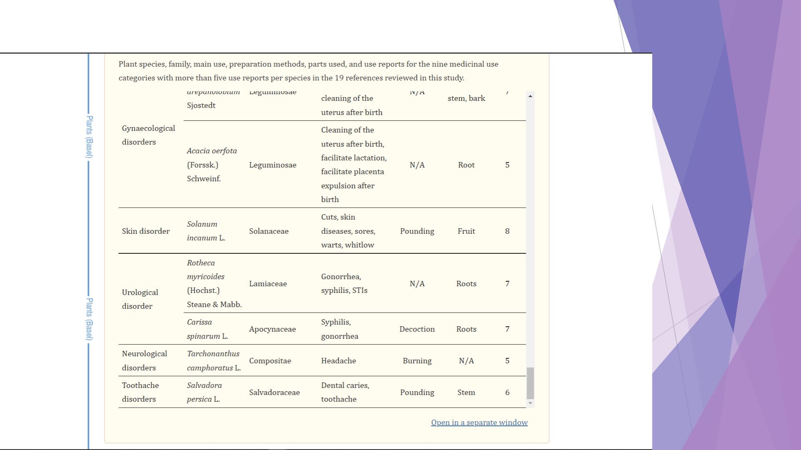
Category of health conditions treated with medicinal plants by the Maasai
The most common category of health conditions treated with medicinal plants by the Maasai of Kenya was
gastrointestinal disorders.
More than half of all recorded medicinal species (59%) were used to treat gastrointestinal disorders which
contributed 27% of the total use reports.
The category had a high informant consensus factor of 0.66 indicating that the knowledge of use of medicinal
plants is largely shared among the Maasai of Kenya occupying different localities.
Kajiado and Narok counties are classified as arid and semi-arid counties with little or no access to clean water.
Gastrointestinal disorders such as diarrhea are therefore common.
Diarrhea is a common disease in Africa and is reported to cause death in children. Similar results were recorded
in a study on medicinal uses of African palms [45].
Respiratory disorders were the second most common disorder treated with medicinal plants and had a high
informant consensus value (0.64) and about 14% of use reports were classified into this category.
In Ethiopia, 16% of the reported medicinal plants species were used to treat respiratory disorders [46].
Muscular-system disorders were the third common disorders that were treated with medicinal plants by the
Maasai.
This could be a result of the Maasai way of life which entails trekking long distances in search of pasture and water for their
livestock.
he long walks in the forest and savannas may result in body discomfort such as body pain, muscle aches, and rheumatism.
Malaria was the fourth disorder treated with medicinal plants. Malaria is caused by parasitic protozoa and is reported to cause
over a million deaths in Sub-Saharan Africa [47].
We expected Malaria to be common among the Maasai due to their pastoral way of life; they live in areas with tall grass and
near water sources which act as mosquitoes’ breeding sites, and hence are susceptible to Malaria.
Urological, gynecological, and skin disorders had only two species with more than five use reports and a low informant
consensus factor of 0.47, 0.46, and 0.33 respectively.
Neurological and toothache disorders also showed lower intracultural consensus due to few use reports.
This suggests that the knowledge of medicinal plants in the five categories is not shared across geographical locations or
within the Maasai groups.
The difference in the use of medicinal plants in the studied counties could be a result of the ease of availability and ecological
factors .
Similar findings have been reported from northwestern South America where knowledge on medicinal uses of palms was not
The Maasai used many different plant parts for preparing medicine.
There are reports for the use of eight different plant parts (Figure 2) but many reports did not specify the part used. In this
data, roots were the most cited plant part used which agrees with studies conducted elsewhere in Africa .
The preference for using the roots for medication could be as a result of higher concentration of active ingredients than in
other parts of the plant .
This contrasts with various other studies conducted in different parts of the Africa that reported leaves as the most frequently
used plant part for medication.
In those studies, the preference for leaves was said to be for their abundance and because leaves contain high concentrations
of compounds with various medicinal properties.
Compared to leaves, however, roots have the ability to maintain bioactive compounds for a long time after harvesting .
he same argument could be true for the Maasai who prefer roots as they can be stored and used later or during harsh
environmental conditions such as long droughts when fresh material is not available.
Harvesting of roots and whole plant has the potential to damage the plant and could be unsustainable for some species [37,58]
and more unsustainable than harvest of leaves and fruits which are constantly produced and can be harvested without causing
irreversible damage to the plant [37].
Different methods of preparation of medicinal plants are used in various parts of the world. For the Maasai people in Kenya,
we found that decoction was the most frequently used method of preparation.

This is consistent with studies conducted elsewhere that reported decoction to be the most commonly used method for
preparation .
Decoction might be the preferred method because of the ease of preparation and the taste of the boiled medicine could easily
be adjusted by adding a solvent of choice, mostly water, honey, or milk.
The Maasai’s common route of administering the plant derived medicine was oral by drinking, which is the same as found in
many other studies.
Even though we present an overview of ways in which medicinal plants were administered, there was missing information for
over half of the use reports, which is a common data gap in many ethnomedicinal studies that was also noted by Farnsworth
almost 30 years ago .
Homogeneity of Use
Metabolic disorders, social problems, gastrointestinal, respiratory, and musculoskeletal disorders had the highest ICF values,
indicating that the plant species used for treatment in these categories were shared by informants .
The other 21 categories had lower ICFs. This suggests that the knowledge of medicinal plants is not necessarily shared across
geographical locations or within groups.
The difference in the use of medicinal plants in the studied counties could be a result of the ease of availability and ecological
factors .
Our results agreed with a recent study conducted in Thailand , that found that each studied village had its own unique
ethnomedicinal knowledge.
REFERENCES
1. Phillips O.L., Meilleur B.A. Usefulness and economic potential of the rare plants of the United States: A statistical
survey. Econ. Bot. 1998;52:57–67. doi: 10.1007/BF02861295. [CrossRef] [Google Scholar]
2. Sofowora A. Research on medicinal plants and traditional medicine in Africa. J. Altern. Complement. Med. 1996;2:365–
372. doi: 10.1089/acm.1996.2.365. [PubMed] [CrossRef] [Google Scholar]
3. WHO (World Health Organization) Trends in Maternal Mortality: 1990 to 2010. WHO, UNICEF, UNFPA and World
Bank Estimates. [(accessed on 3 December 2018)];2012 Available
online: https://www.who.int/reproductivehealth/publications/monitoring/9789241503631/en/
4. Kigen G.K., Ronoh H.K., Kipkore W.K., Rotich J.K. Current trends of traditional herbal medicine practice in Kenya: A
review. Afr. J. Pharm. 2013;2:32–37. [Google Scholar]
5. Kiringe J.W. Ecological and anthropological threats to ethno-medicinal plant resources and their utilization in Maasai
communal ranches in the Amboseli region of Kenya. Ethnobot. Res. Appl. 2005;3:231–242. doi: 10.17348/era.3.0.231-
242. [CrossRef] [Google Scholar]
6. Dharani N., Yenesew A. Medicinal Plants of East Africa: An illustrated Guide. Najma Dharani in Association with
Drongo Editing and Publishing, Sterling Publishers Pvt. Ltd.; New Delhi, India: 2010. [Google Scholar]
7. Cox P.A., Balick M.J. The ethnobotanical approach to drug discovery. Sci. Am. 1994;270:82–87.
doi: 10.1038/scientificamerican0694-82. [PubMed] [CrossRef] [Google Scholar]
8. Heinrich M. Ethnobotany and its role in drug development. Phytother. Res. 2000;14:479–488. doi: 10.1002/1099-
1573(200011)14:7<479::AID-PTR958>3.0.CO;2-2. [PubMed] [CrossRef] [Google Scholar]
9. Karehed J., Odhult E. An Ethnobotanical Study among the Maasai of Loita Hills, Kenya. Minor Field Studies No.
14. Swedish University of Agricultural Sciences, International Office; Uppsala, Switzerland: 1997. [Google Scholar]
10. Nankaya J., Nampushi J., Petenya S., Balslev H. Ethnomedicinal plants of the Loita Maasai of Kenya. J. Environ. Dev.
Sustain. 2019 doi: 10.1007/s10668-019-00311-w. [CrossRef] [Google Scholar]
11. Hollis A.C. The Masai: Their Language and Folklore. Clarendon Press; Oxford, UK: 1905. [Google Scholar]
12. Merker M. Die Masai. Dietrich Reimer; Berlin, Germany: 1910. [Google Scholar]
13. Bussmann R.W., Gilbreath G.G., Solio J., Lutura M., Lutuluo R., Kunguru K., Wood N., Mathenge S.G. Plant use of the Maasai of Sekenani
Valley, Maasai Mara, Kenya. J. Ethnobiol. Ethnomed. 2006;2:22–27. doi: 10.1186/1746-4269-2-22. [PMC free article] [PubMed]
[CrossRef] [Google Scholar]
14. Kiringe J.W. A survey on the use of ethno-medicinal health remedies among the Maasai of Southern Kajiado District, Kenya. Ethnobot.
Res. Appl. 2006;73:61–73. doi: 10.17348/era.4.0.61-74. [CrossRef] [Google Scholar]
15. Bussmann R.W., Paniagua-Zambrana N.Y., Wood N., Njapit S.O., Njapit J.O., Osoi G.S.E., Kasoe S.P. Knowledge loss and change between
2002 and 2017—A revisit of plant use of the Maasai of Sekenani valley, Maasai Mara, Kenya. Econ. Bot. 2018;72:207–216.
doi: 10.1007/s12231-018-9411-9. [CrossRef] [Google Scholar]
16. Sindiga I. Indigenous (medical) knowledge of Maasai. Indig. Knowl. Dev. Monit. 1994;2:16–18. [Google Scholar]
17. Seno S.K.O. Ph.D. Thesis. University of Arizona; Tucson, AZ, USA: 1998. Strategies for Enhancing Local Support for Wildlife
Conservation in Masailand, Kenya. [Google Scholar]
18. Koch A., Tamez P., Pezzuto J., Soejarto D. Evaluation of plants used for antimalarial treatment by the Massai of Kenya. J.
Ethnopharmacol. 2005;101:95–99. doi: 10.1016/j.jep.2005.03.011. [PubMed] [CrossRef] [Google Scholar]
19. Maundu P., Berger D., Ole Saitabau C., Nasieku J., Kipelian M., Mathenge S., Morimoto Y., Höft R. Ethnobotany of the Loita Maasai:
Towards Community Management of the Forest of the Lost Child. Experiences from the Loita Ethnobotany Project. Volume 8. UNESCO;
Paris, France: 2001. pp. 1–34. People and Plants Working Paper. [Google Scholar]
20. Kokwaro J.O. Medicinal Plants of East Africa. 3rd ed. University of Nairobi Press; Nairobi, Kenya: 2009. [Google Scholar]
. [CrossRef] [Google Scholar]
21. Muthee J.K., Gakuya D.W., Mbaria J.M., Kareru P.G., Mulei C.M., Njonge F.K. Ethnobotanical study of anthelmintic and other medicinal
plants traditionally used in Loitoktok district of Kenya. J. Ethnopharmacol. 2011;135:15–21. doi: 10.1016/j.jep.2011.02.005. [PubMed]
[CrossRef] [Google Scholar]
22. Kigondu E.V.M., Rukunga G.M., Gathirwa J.W., Irungu B.N., Mwikwabe N.M., Amalemba G.M., Omar S.A., Kirira P.G. Antiplasmodial
and cytotoxicity activities of some selected plants used by the Maasai community, Kenya. S. Afr. J. Bot. 2011;77:725–729.
doi: 10.1016/j.sajb.2011.03.008. [CrossRef] [Google Scholar]
23. Dharani N. Field Guide to Common Trees & Shrubs of East Africa. 2nd ed. Random Struik Publishers; Capetown, South Africa:
2011. [Google Scholar]
24. Nankaya J., Layton P., Hall K., Bardwin E. Master’s Thesis. Clemson University; Clemson, SC, USA: 2014. The Salient Traditional
Medicinal Plants and Conservation Strategies of the Loita Maasai of Kenya. [Google Scholar]
25. Kimondo J., Miaron J., Mutai P., Njogu P. Ethnobotanical survey of food and medicinal plants of the Ilkisonko Maasai community in
Kenya. J. Ethnopharmacol. 2015;175:463–469. doi: 10.1016/j.jep.2015.10.013. [PubMed] [CrossRef] [Google Scholar]
26. Ngaruiya G.W. Reweaving stakeholder networks: Promoting climate mitigation and Maasai culture using medicinal plants in
Kenya. Ecosyst. Serv. 2015;15:103–112. doi: 10.1016/j.ecoser.2015.05.010. [CrossRef] [Google Scholar]
27. Tsigemelak D., Dharani J., Kinyamario J.I., Kiboi S. The utilization of medicinal plants by the Masaai community in arid lands of Kajiado
county, Kenya. Int. J. Plant. Anim. Environ. Sci. 2016;6:3. [Google Scholar]
28. Duncan C.M., Buchanan C., Chalo P.M. An ethnobotanical study of medicinal plants used by the Masaai People of Losho, Kenya. Int. J.
Pharm. Res. 2016;6:2. [Google Scholar]
29. Nyang’au H.O., Maingi J., Kebira A. The efficacy of some medicinal plants used locally within Transmara west, Narok County, Kenya
against selected Enterobacteria and Candida. J. Pharm. Biol. Sci. 2017;12:1. doi: 10.9790/3008-120101115122. [CrossRef] [Google Scholar]
30. Orech F.O., Chwarz J.G. Ethno-phyto therapeutic remedies used in meat, milk, and blood products by the Maasai people of Kenya. S. Afr. J.
Bot. 2017;108:278–280. doi: 10.1016/j.sajb.2016.10.026. [CrossRef] [Google Scholar]
31. Nyambati G.K., Maranga R.O., Ozwara H., Mbugua P.K. Use of putative antimalarial herbal medicines among communities in Trans-Mara,
Kuria and Suba Districts of Kenya. SEJ Pharmacognosy. 2018;1:1–14. [Google Scholar]
32. Phumthum M., Srithi K., Inta A., Junsongduang A., Tangjitman K., Pongamornkul W., Trisonthi C., Balslev H. Ethnomedicinal plant
diversity in Thailand. J. Ethnopharmacol. 2018;214:90–98. doi: 10.1016/j.jep.2017.12.003. [PubMed] [CrossRef] [Google Scholar]
33. The Plant List. [(accessed on 5 January 2019)];2013 Version 1.1. Available online: http://www. theplantlist.org/
34. Angiosperm Phylogeny Website, version 14. [(accessed on 15 May 2018)]; Available
online: http://www.mobot.org/MOBOT/research/APweb/
35. Trotter R.T., Logan M.H. Informant consensus: A new approach for identifying potentially effective medicinal plants. In: Etkin N.L.,
editor. Plants in Indigenous Medicine and Diet: Biobehavioral Approaches. Redgrave Publishing Company; New York, NY, USA: 1986. pp.
91–112. [Google Scholar]
36. Gazzaneo L.R.S., de Lucena R.F.P., de Albuquerque U.P. Knowledge and use of medicinal plants by local specialists in a region of
Atlantic Forest in the state of Pernambuco (Northeastern Brazil) J. Ethnobiol. Ethnomed. 2005;1:9. doi: 10.1186/1746-4269-1-9. [PMC
free article] [PubMed] [CrossRef] [Google Scholar]
37. Srithi K., Balslev H., Wangpakapattanawong P., Srisanga P., Trisonthi C. Medicinal plant knowledge and its erosion among the Mien
(Yao) in northern Thailand. J. Ethnopharmacol. 2009;123:335–342. doi: 10.1016/j.jep.2009.02.035. [PubMed] [CrossRef] [Google
Scholar]
38. ICPC-2 . International Classification of Primary Care. 2nd ed. Oxford University Press; New York, NY, USA: 1998. [Google Scholar]
39. Omwenga E., Okemo P., Mbugua P., Ogol C.K. Ethnobotanical survey and antimicrobial evaluation of medicinal plants used by the
Samburu Community (Kenya) for treatment of Diarrhea. Pharm. Mag. 2009;5:165–172. [Google Scholar]
40. Tene V., Malagón O., Finzi P.V., Vidari G., Armijos C., Zaragoza T. An ethnobotanical survey of medicinal plants used in Loja and
Zamora-Chinchipe, Ecuador. J. Ethnopharmacol. 2007;111:63–81. doi: 10.1016/j.jep.2006.10.032. [PubMed] [CrossRef] [Google Scholar]
41. Salinitro M., Vicentini R., Bonomi C., Tasson A. Traditional knowledge on wild and cultivated plants in the Kilombero Valley Morogoro
Region, Tanzania. J. Ethnobiol. Ethnomed. 2017;13:17. doi: 10.1186/s13002-017-0146-y. [PMC free article] [PubMed] [CrossRef] [Google
Scholar]
42. Phillips O., Gentry A.H. The useful plants of Tambopata, Peru I: Statistical hypothesis tests with a new quantitative technique. Econ.
Bot. 1993;47:15–32. doi: 10.1007/BF02862203. [CrossRef] [Google Scholar]
43. Zhou Y., Liu B., Mbuni Y., Yan X., Mwachala G., Hu G., wang Q. Vascular flora of Kenya, based on the flora of tropical East
Africa. PhytoKeys. 2017;90:113–126. [PMC free article] [PubMed] [Google Scholar]
44. Voeks R.A. Tropical forest healers and habitat preference. Econ. Bot. 1996;50:382–400. doi: 10.1007/BF02866520
45. Gruca M., Blach-Overgaard A., Balslev H. African palm ethno-medicine. J. Ethnopharmacol. 2015;165:227–237.
doi: 10.1016/j.jep.2015.02.050. [PubMed] [CrossRef] [Google Scholar]
46. Giday M., Asfaw Z., Woldu Z. Medicinal plants of the Meinit ethnic group of Ethiopia: An ethnobotanical study. J.
Ethnopharmacol. 2009;124:513–521. doi: 10.1016/j.jep.2009.05.009. [PubMed] [CrossRef] [Google Scholar]
47. WHO (World Health Organization) 10 Facts on Malaria. [(accessed on 23 December 2018)];2010 Available
online: https://www.who.int/features/factfiles/malaria/en/
48. Bennett B.C., Prance G.T. Introduced plants in the indigenous pharmacopoeia of Northern South America. Econ.
Bot. 2000;54:90–102. doi: 10.1007/BF02866603. [CrossRef] [Google Scholar]
49. Gaoue O.G., Coe M.A., Bond M., Hart G., Seyler B.C., McMillen H. Theories and major hypotheses in ethnobotany. Econ.
Bot. 2017;71:269–287. doi: 10.1007/s12231-017-9389-8. [CrossRef] [Google Scholar]
50. Cámara-Leret R., Paniagua-Zambrana N., Svenning J.-C., Balslev H., Macía M.J. Geospatial patterns in traditional
knowledge serves in assessing intellectual property rights and benefit-sharing in northwest South America. J.
Ethnopharmacol. 2014;158:58–65. doi: 10.1016/j.jep.2014.10.009. [PubMed] [CrossRef] [Google Scholar]
51. Steenkamp V. Traditional herbal remedies used by South African women for gynecological complaints. J.
Ethnopharmacol. 2003;86:97–108. doi: 10.1016/S0378-8741(03)00053-9. [PubMed] [CrossRef] [Google Scholar]
52. Chalabra S.C., Mahunnah R.L.A., Mshiu E.N. Plants used in traditional medicine in eastern Tanzania. VI. Angiosperms
(Sapotaceae to Zingiberaceae) J. Ethnopharmacol. 1993;39:83–103. doi: 10.1016/0378-8741(93)90024-Y. [PubMed]
[CrossRef] [Google Scholar]
53. Kunwar R.M., Nepal B.K., Kshhetri H.B., Rai S.K., Bussmann R.W. Ethnomedicine in Himalaya: A case study from
Dolpa, Humla, Jumla and Mustang districts of Nepal. J. Ethnobiol. Ethnomed. 2006;2:27. doi: 10.1186/1746-4269-2-
27. [PMC free article] [PubMed] [CrossRef] [Google Scholar]
54. Fortini P., Di Marzio P., Guarrera P., Iorizzi P.M. Ethnobotanical study on the medicinal plants in the Mainarde
Mountains (central-southern Apennine, Italy) J. Ethnopharmacol. 2016;184:208–218.
doi: 10.1016/j.jep.2016.03.010. [PubMed] [CrossRef] [Google Scholar]
55. Asowata-Ayodele A.M., Afolayan A.J., Otunola G.A. Ethnobotanical survey of culinary herbs and spices used in the traditional medicine system of Nkonkobe
Municipality, Eastern Cape, South Africa. S. Afr. J. Bot. 2016;104:69–75. doi: 10.1016/j.sajb.2016.01.001. [CrossRef] [Google Scholar]
56. Amri E., Kisangau D.P. Ethnomedicinal study of plants used in villages around Kimboza forest reserve in Morogoro, Tanzania. J. Ethnobiol.
Ethnomed. 2012;8:1. doi: 10.1186/1746-4269-8-1. [PMC free article] [PubMed] [CrossRef] [Google Scholar]
57. Moshi M.J., Donald F., Otieno R., Mbabazi P.K., Weisheit A. Ethnomedicine of the Kagera Region, northwestern Tanzania. Part 2: The medicinal plants used in
Katoro ward, Bukoba District. J. Ethnobiol. Ethnomed. 2010;6:9. doi: 10.1186/1746-4269-6-19. [PMC free article] [PubMed] [CrossRef] [Google Scholar]
58. Alebie G., Urga B., Worku A. Systematic review on traditional medicinal plants used for the treatment of malaria in Ethiopia: Trends and perspectives. Malar.
J. 2017;16:307. doi: 10.1186/s12936-017-1953-2. [PMC free article] [PubMed] [CrossRef] [Google Scholar]
59. Moshi M.J., Otieno D.F., Weisheit A. Ethnomedicine of the Kagera region, northwestern Tanzania. Part 3: Plants used in traditional medicine in Kikuku village,
Muleba District. J. Ethnobiol. Ethnomed. 2012;8:14. doi: 10.1186/1746-4269-8-14. [PMC free article] [PubMed] [CrossRef] [Google Scholar]
60. Mirutse G., Gobana A. An ethnobotanical survey on plants of veterinary importance in two woredas of southern Tigray, northern Ethiopia. SINET: Ethiopia. J.
Sci. 2003;26:123–136. [Google Scholar]
61. Debela H. Master’s Thesis. Addis Ababa University; Addis Ababa, Ethiopia: 2001. Use and Management of Traditional Medicinal Plants by Indigenous People
of Bosat Woreda, Wolenchiti Area: An Ethnobotanical Approach. [Google Scholar]
62. Getachew A., Dawit A., Kelbesa U. A survey of medicinal traditional plants in Shirka district, Arsi Zone, Ethiopia. Ethiop. Pharm. J. 2001;19:30–47. [Google
Scholar]
63. Farnsworth N.R. The role of ethnopharmacology in drug development. In: Chadwick D.J., Marsh J., editors. Bioactive Compounds from Plants. John Wiley &
Sons; New York, NY, USA: 1990. pp. 2–21. Ciba-Geigy Symposium No.154. [Google Scholar]
https://www.ncbi.nlm.nih.gov/pmc/arti
cles/PMC7020225/